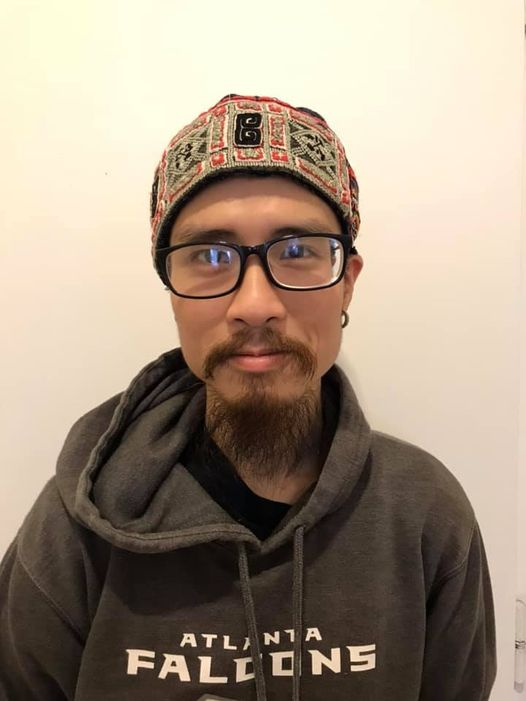
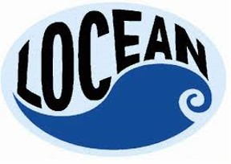

I am a chemical oceanographer and marine biogeochemist specializing in ocean trace-metal cycling, aquatic chemical processes, and biogeochemical modeling.
My research combines observations, numerical models, and data synthesis to investigate how redox reactions, organic ligands, sedimentary inputs, particle dynamics, and ocean circulation regulate the distribution and biological availability of iron and other nutrients.
I develop and apply regional and global ocean biogeochemical models to connect chemical processes with marine ecosystems, carbon cycling, and climate change.
I received my Ph.D. in Oceanography from the School of Earth & Atmospheric Sciences at Georgia Institute of Technology in 2019 and my B.S. in Marine Engineering from Hanoi University of Science in 2013.
I am currently a Postdoctoral Scholar in the Department of Atmospheric and Oceanic Sciences at the University of California, Los Angeles (UCLA). Before joining UCLA, I was a Postdoctoral Associate at the Laboratoire d'Océanographie et du Climat (LOCEAN) at Sorbonne University in Paris.
I investigate the processes controlling the marine iron cycle, including redox chemistry, organic ligand binding, scavenging, sedimentary iron inputs, particle dynamics, and biological uptake.
My research at UCLA focuses on the California Current System and the eastern Pacific Ocean. I combine observations and high-resolution numerical modeling to investigate the transport and cycling of iron along continental margins and its connections to ocean ecosystems.
I study interactions between iron and marine organisms, including heterotrophic bacteria and zooplankton, and investigate how iron availability and recycling influence marine food webs and ecosystem dynamics.
I use regional and global ocean biogeochemical models together with observational datasets and model intercomparison to understand processes controlling ocean biogeochemistry.
I am interested in the interactions between trace-metal cycling, marine carbon cycling, benthic-pelagic coupling, and climate-change feedbacks.
My research investigates how sedimentary inputs, particle dynamics, redox chemistry, organic ligands, and ocean circulation regulate the transport of iron from continental margins to the open ocean.
I combine regional ocean modeling and observations to investigate physical and biogeochemical processes controlling iron distributions along the U.S. West Coast and their implications for marine ecosystems.
I am investigating how iron availability and recycling influence heterotrophic bacteria, zooplankton, phytoplankton, and higher trophic levels.
I evaluate ocean biogeochemical models using observations and large-scale data synthesis, including comparisons between model simulations and GEOTRACES observations.
NSF OCE-2343357 (2024–2027)
“Iron Protection, Removal, and Transport along Anoxic Margins and
Impacts on the Open Ocean.”
Pending NSF Collaborative Research
“Factors controlling iron distribution on the Southern Oregon shelf.”
Co-Principal Investigator with Daniele Bianchi, James Moffett,
and Kristen Buck.
Physics and Chemistry of the Oceans
Lecturer, proctoring, and grading for approximately 20 advanced
undergraduate and graduate students.
Introduction to Environmental Sciences
Lecturer, proctoring, and grading for approximately 50 students.
Introduction to Ocean Biogeochemical Modeling
A short instructional video introducing model thinking and philosophy with a focus on ocean biogeochemical dynamics.
2025 — Goldschmidt Conference
Processes controlling the shelf-to-basin transport of particulate and
dissolved iron in the Pacific Ocean. Oral presentation.
2024 — Deep Ocean Observing Annual Meeting
Fate and transport of large iron fluxes from benthic sediments along
the eastern Pacific coasts to the open ocean. Oral presentation.
2023 — Goldschmidt Conference
The shelf-to-basin transport of iron from the northern U.S. West Coast
to the Pacific Ocean. Poster.
2022 — Institute for Marine and Antarctic Studies,
University of Tasmania
Evaluating biological and physical drivers of ocean iron cycling.
Invited seminar.
2022 — University of Vienna
The microbial control on the ocean cycling of trace metals under the
current and changing climate. Invited seminar.
2021 — Goldschmidt Conference
Examining the interaction between free-living bacteria and iron in
the global ocean. Oral presentation.
Fate and transport of large iron fluxes from benthic sediments
along the eastern Pacific coasts to the open ocean
Watch on YouTube
Biological processes control the ocean iron distribution
Watch on YouTube
The interaction of heterotrophic bacteria and iron in the global ocean
Watch on YouTube
Zooplankton demand modulates iron recycling flux and microbial iron
consumption in the ocean
Watch on YouTube
Curriculum Vitae
Download my CV (September 2026)
Google Scholar
Google Scholar
ORCID
ORCID
ResearchGate
ResearchGate
LinkedIn
LinkedIn
Department of Atmospheric and Oceanic Sciences
University of California, Los Angeles
Los Angeles, CA 90095